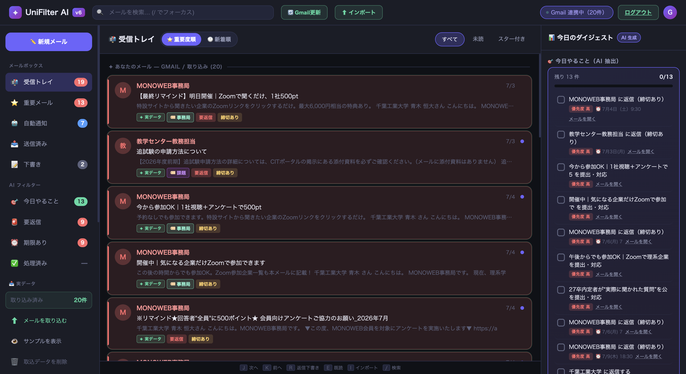
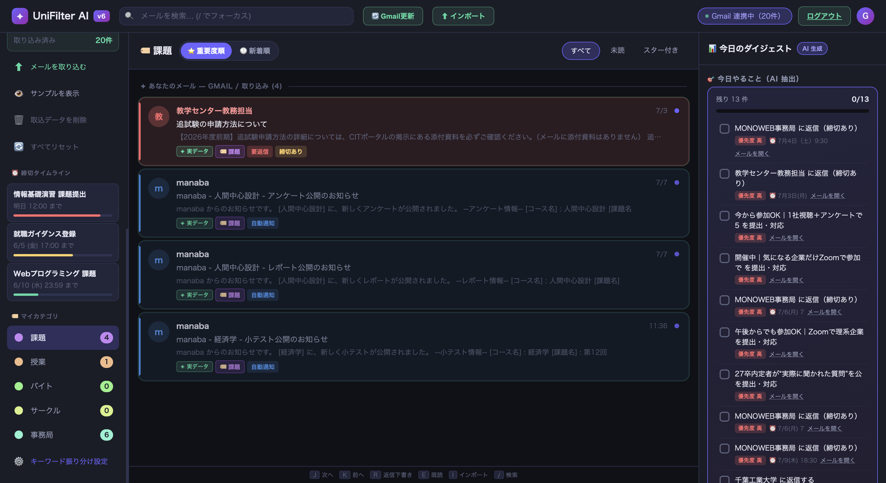

メールに追われる大学生の 「今やるべき連絡」が 開いた瞬間、いちばん上に来る。探さないGmail。

「学祭の責任者を任され、溜まったメールを放置していたら、期限内に出すべきGoogleフォームの回答を忘れた」
開くと、対応すべき連絡が優先度順に並ぶ（自分で仕分け設定をしなくていい）。
「探す時間」が省け、締切のあるフォームなど大事な1通を見落としにくくなる。
その分、学業や仕事そのものに使える時間と集中が少し増える。

「サークルの重要連絡を見落としていた自分が、最初のユーザー。7/9時点で受信箱19件中11件が自動で仕分けされ、"探す前に見つかる"状態になった。」 — 開発者本人（N1当事者・学祭責任者の経験あり）
Google OAuthgmail.readonly のみ要求（送信/削除はしない）。トークンは HttpOnly Cookie 管理Gmail API + MIME解析受信トレイを取得し本文を抽出（サーバに保存しない安全設計）キーワード辞書＋正規表現カテゴリ振り分け・締切/返信判定で優先度順に整列（分類は自前ルール／LLM連携は 06 次の一手で）Vercelホスティング「誰でも使える公開アプリ」を目指したが、Google連携（OAuth）のセキュリティ制約が厳しく、そのまま公開に踏み切れず断念した。
壁にぶつかったら全部を諦めず、優先度を切り替える。「公開」は後回しにし、まず"自分が実用できる形"に集中した。実装前に Claude で方針を固め、妥当な計画を立ててから着手することで手戻りを減らせた。
Claude 等の LLM を組み込み、キーワードに頼らず「メールの意味」で分類する。「サークル」という単語がなくても、集金・出欠・締切の文脈を読んで重要度を判定 → キーワード辞書の限界（登録漏れ・表記ゆれ）を越える。「賢さは借りる」を、設計だけでなく実装で実現するのが次の一歩。